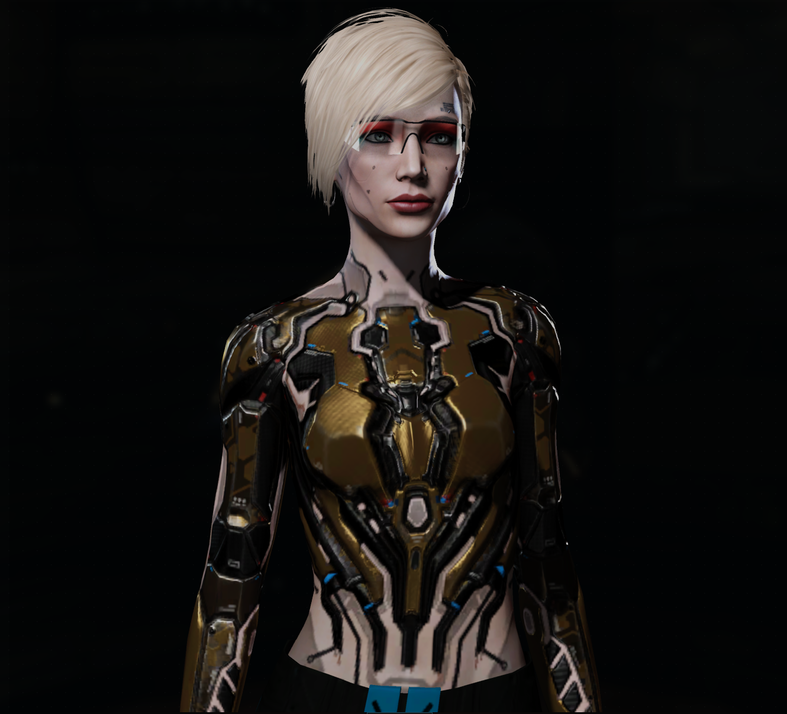

A PERSONAL ARCHIVE OF NEW EDEN
CHRONICLES
OF NEW EDEN
Three capsuleers. Three destinies. One New Eden.
A record of identity, allegiance, exploration and the paths chosen among the stars.
An independent fan-made archive documenting three capsuleers and their personal histories in EVE Online.
EXPLORE THE ARCHIVE ↘
NEW EDEN / PERSONAL RECORDS
道
“Three lives move through the same galaxy.CHRONICLES OF NEW EDEN
Each follows a different path.”
THE CAPSULEERS
Three paths among the stars
Different origins, different convictions, and different ways of making a place in New Eden.
ACHURA · ROGUE CAPSULEER
Seiryun
The Rogue Cultivator. A seeker shaped by contemplation, discipline and independence.
ENTER HIS ARCHIVE ↗
ACHURA · GOONSWARM / IMPERIUM
Agaroth Ethriael
The Old Wolf of New Eden. A veteran capsuleer whose allegiance has endured.
ENTER HIS ARCHIVE ↗
CIVIRE · GOONWAFFE
Lenora
Guardian of the Fleet. An explorer, loyal ally and advocate of cybernetic enhancement.
ENTER HER ARCHIVE ↗THE RECORD
History in progress
This archive grows with new journeys, screenshots, ship records, videos and memories from New Eden.
YC106Agaroth's capsuleer era
2004Lenora's journey begins
3Individual paths